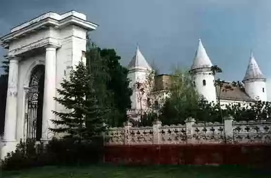

SRBIJA
Dvorac „Fantast“ nalazi se na oko 14 km od Bečeja na putu za Bačku Topolu, u centralnom delu Vojvodine. Od Novog Sada udaljen je 60 km, a od Beograda
135 km. Čitav kompleks prostire se na oko 65 ha i obuhvata dvorac, mali kaštel, kapelu Svetog Đorđa, ergelu trkačkih konja i park.
Dvorac je podigao poznati vojvođanski veleposednik Bogdan Dunđerski, koji je od oca nasledio 2600 jutara zemlje između Srbobrana i Bečeja. Kažu da je
velelepan dvorac pored Bečeja podigao iz inata, samo da bi pokazao da nije propao. Kada je sagrađen, dvorac „Fantast“ je odslikavao svu moć i bogatstvo
svog vlasnika, koji se nikada nije ženio i imao je tri velike ljubavi: žene, konje i vino. Bio je jedan od retkih ljudi koji je uspeo da ostvari svoje
snove sagradivši dvorac iz mašte. Bogdan Dunđerski je drugovao sa čuvenim slikarem Urošem Predićem i kad je odlučio da na svom imanju podigne kapelu
Sv. Đorđa, u neovizantijskom stilu, Prediću je poverio da oslika ikonostas. Najveći vojvođanski veleposednik je umro 1943. godine, a imanje je zaveštao
Matici srpskoj.

Izgrađen u periodu od 1919. do 1923. i predstavlja mešavinu različitih neostilskih formi netipičnih za naše prostore. Sam toranj i četiri ugaone kule
su građene u stilu neogotike, dok su oba ulaza urađena u stilu neoklasicizma. Dvorac je ograđen niskim zidom sa dvema monumentalnim kapijama od kovanog
gvožđa.
Ergela spada u red najpoznatijih u ovom delu Evrope i tu su odgojena najpoznatija grla u bivšoj Jugoslaviji. Više od polovine celokupnog imanja je
nekad zauzimala ergela koja je brojala oko 1400 rasnih konja. Danas se na imanju nalazi oko 80 grla u šest konjušnica, a postoji i staza za trening
galopera. Organizovana je škola jahanja, a moguće je i iznajmljivanje konja turistima. U okviru kompleksa se nalazi i park sa mnoštvom različitih
vrsta drveća i uredenim stazama za šetnju. Pored hotela, posetiocima su na raspolaganju teniska igrališta, a tu je i pista za male avione.
Dvorac je 1983. pretvoren u hotel. Dobio je ime po konju Fantastu, najboljem konju koje je ergela Bogdana Dunđerskog odgajila.